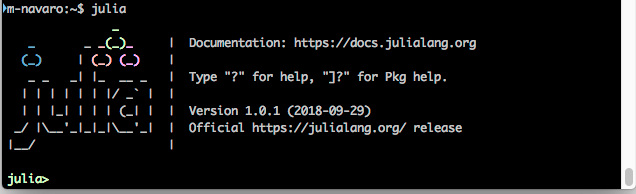

Installation
- Download for your plaform at http://julialang.org/downloads/
- juliaup is a cross-platform installer useful to install specific Julia versions.
- Homebrew is the best way to install Julia on macOS.
- Most Linux distributions come with Julia packages in their repositories. However, these may lag somewhat behind the current rather fast development cycle.
Julia shell
- Type julia in a terminal 
- “Tab” for autocompletion
pwd()(Current directory)cd()(Change directory),homedir()(Home directory)- Use
;to switch to unix shell. help(“sin”)ou?sintoggles the help mode.
Run julia code.
Julia programs use “.jl” extension by convention and can be executed in the julia prompt with:
include("my_program.jl")- Julia is first translated into an intermediate representation.
- Then LLVM compiles it for your machine.
This means that
- re-running the same code is faster the second time around
- it runs at speeds comparable to compiled C or Fortran code
IDE
- Julia shell
- Command line :
julia my_program.jl - Julia notebooks (Jupyter)
- VS Code
I personally use Jupyter for development but VScode seems to be the most used environment.
Packages
- Use
]to switch to package manager.
pkg> add IJuliawill install the package. Type help to display all available commands.
Use “backspace” to go back to the julia shell.
https://pkg.julialang.org
The package is installed in directory ~/.julia/
To import the package, type:
using IJuliaJupyter notebook
The Jupyter Notebook is an open-source web application that allows you to create and share documents that contain live code, equations, visualizations and narrative text. Uses include: data cleaning and transformation, numerical simulation, statistical modeling, data visualization, machine learning, and much more.
type:
using IJulia
notebook() # use notebook(detached=true) To convert a notebook file .ipynb in julia program .jl:
- In the top menu
File->Download as - Command line :
ipython nbconvert --to script my_notebook.ipynb.
Why Julia?
- Increase the programmer productivity.
- Python is a very nice language to code a prototype but i had to use Cython to make it faster. And had to code in Fortran if the code had to be deployed on HPC cluster
- High-level languages like python and R let one explore and experiment rapidly, but can run slow.
- Low-level languages like Fortran/C++ tend to take longer to develop, but run fast.
- This is sometimes called the “two language problem” and is something the Julia developers set out to eliminate.
- My code runs much faster than Python, and typically similar to Fortran.
Julia provides a “best of both worlds” experience for programmers who need to develop novel algorithms and bring them into production environments with minimal effort.
Julia features
- High-level language for numerical computing.
- Born in 2009 and version 1.0 was released in August 2018.
- Dynamically-typed with optional types, feels like a scripting language, and has good support for interactive use.
- Easy to learn for people that comes from R and Python.
- Designed from the beginning to be fast as Fortran and C
- Julia programs compile to efficient native code via LLVM.
- Designed for parallelism, and provides built-in primitives for parallel computing
- can call C and Fortran libraries natively
- can call Python libraries via PyCall package
- can call R functions via RCall package
Julia is a language made for Science.
http://www.stochasticlifestyle.com/some-state-of-the-art-packages-in-julia-v1-0
Mathematics
- JuliaDiff – Differentiation tools
- JuliaDiffEq – Differential equation solving and analysis
- JuliaGeometry – Computational Geometry
- JuliaGraphs – Graph Theory and Implementation
- JuliaIntervals - Rigorous numerics with interval arithmetic & applications
- JuliaMath – Mathematics made easy in Julia
- JuliaOpt – Optimization (Gitter)
- JuliaPolyhedra – Polyhedral computation
- JuliaSparse – Sparse matrix solvers
Data Science
- JuliaML – Machine Learning
- JuliaStats – Statistics
- JuliaImages – Image Processing
- JuliaText – Natural Language Processing (NLP), Computational Linguistics and (textual) Information Retrieval
- JuliaDatabases – Various database drivers for Julia
- JuliaData – Data manipulation, storage, and I/O in Julia